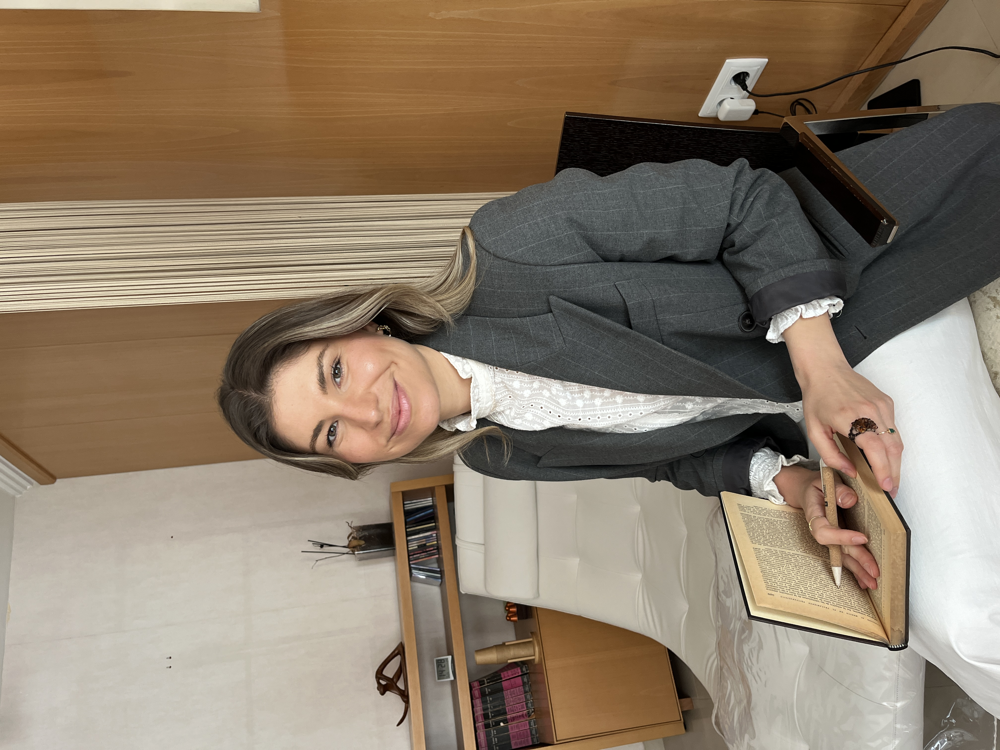

Colaboraciones


Psicóloga en Valencia · Online
Psicología clínica orientada al cambio real.
Acompañamiento individual, presencial y online.


Sobre mí
Soy Sonia Barber, psicóloga colegiada especializada en terapia cognitivo-conductual y psicología humanista. Trabajo desde un enfoque integrador, adaptado a cada persona y a su momento vital.
Mi consulta está en Valencia, aunque también atiendo de forma completamente online. Creo en la terapia como un espacio seguro donde la persona puede explorar, entenderse y crecer sin juicios.
Cómo trabajamos
Nos conocemos sin compromiso. Te escucho, resuelvo tus dudas y valoramos juntas si la terapia conmigo es el camino adecuado para ti.
Exploramos tu situación actual, tu historia y tus objetivos. Diseñamos un plan terapéutico personalizado, claro y con dirección.
Sesiones semanales o quincenales donde trabajamos de forma activa. Herramientas reales, avances medibles y un espacio seguro.
¿Es para ti?
Un momento de tu tiempo
Testimonios
Nunca pensé que hablar con alguien pudiera cambiar tanto mi forma de ver las cosas. Sonia crea un espacio donde te sientes completamente a salvo.
Llevaba años evitando situaciones por la ansiedad. Con Sonia aprendí herramientas reales que uso cada día. Ojalá hubiera pedido ayuda antes.
Lo que más me sorprendió fue lo concreta y práctica que es la terapia. No solo hablas, realmente trabajas. Y los resultados se notan.
Preguntas frecuentes
Pedir ayuda no es rendirse. Es elegir. La primera llamada es completamente gratuita y sin compromiso.
Es un primer contacto sin compromiso de unos 20-30 minutos. Me cuentas cómo estás y qué te trae, y yo te explico cómo trabajo. Valoramos juntas si hay un buen encaje para empezar un proceso.
Sí. Atiendo tanto presencialmente en mi consulta de Valencia como de forma completamente online. Las sesiones online tienen la misma calidad y profundidad que las presenciales.
Las sesiones duran 50 minutos. La frecuencia habitual es semanal, aunque en función del momento del proceso puede pasar a quincenal.
Depende mucho de cada persona y de los objetivos. Algunos procesos duran 3-4 meses, otros son más largos. En la primera sesión ya podemos hacer una estimación orientativa.
Actualmente atiendo de forma privada. Esto me permite ofrecerte un enfoque personalizado, sin limitaciones en el número de sesiones ni en los tiempos.
El primer paso
Sin compromiso. Sin prisas. Solo un espacio para conocernos y ver si puedo acompañarte.